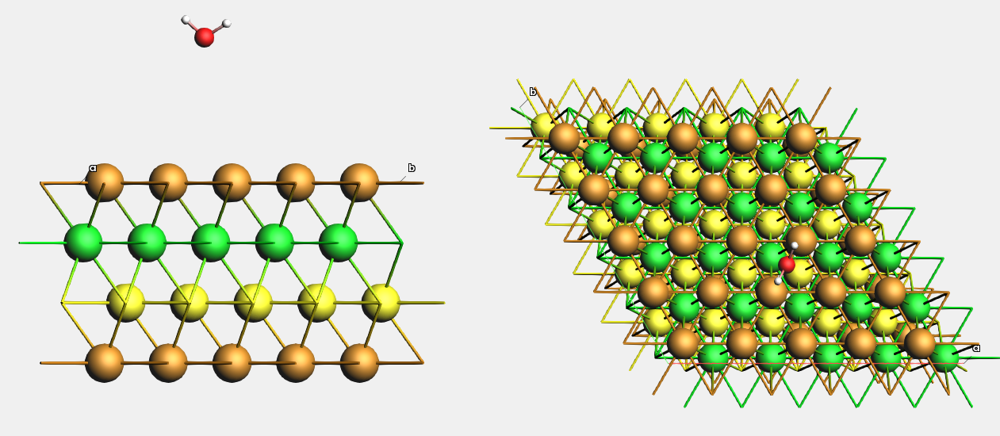
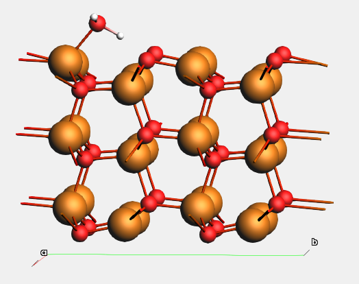

Crystals and Surfaces¶
This tutorial covers, for crystals:
- Periodic crystals in AMSinput
- k-space sampling and convergence
- Lattice optimizations, with an example
- Overview of crystal properties in AMS
And for surfaces:
- Slabs vs. QM/MM in AMS
- Miller indices
- Create a surface slab in AMSinput
- Surface passivation, polar and nonpolar surfaces
- Surface relaxation, surface reconstruction
- Surface energy,
- Surface supercells, including matrix notation
- Adsorption sites and Adsorption energy calculations
Note
If you’re not familiar with AMSinput and AMSjobs, first go through the Getting Started and Building Crystals and Slabs tutorials, as well as some tutorial for your compute engine, like
- DFTB: Diamond Lattice Optimization and Phonons
- BAND: NiO and DFT+U
- Quantum ESPRESSO: Geometry and Lattice Optimization
- VASP: TiO2 surface relaxation
- ReaxFF: Water on an aluminum surface
To run the PLAMS python scripts, first go through the Python Scripting With PLAMS tutorial.
In this tutorial, Zn atoms are colored brown for improved contrast (the default color is white). Learn how to change the default color of atoms.
3D-periodic crystals¶
This tutorial covers only 3D-periodic crystals and their surfaces. Quasicrystals (aperiodic crystals) are not covered.
Files¶
AMSinput can import and export coordinates in many different file formats, including .cif and .pdb files. Select File → Import coordinates or File → Export coordinates.
When exporting to .xyz format, AMS also writes the lattice vectors into the file.
Unit cells¶
In AMS, a 3D-periodic crystal can be represented as a periodic repetition of some unit cell. This is known as periodic boundary conditions (PBC). The unit cell is defined by three lattice vectors.
There are infinitely many choices of unit cells. The two most important ones are:
- The primitive cell, which is the smallest possible unit cell (containing only one lattice point), and
- The conventional cell, which follows guidelines outlined by the International Union for Crystallography.
For example, copper is a cubic closed-packed (ccp) metal with a face-centered cubic (fcc) lattice. The primitive and conventional cells are:
| Cu unit cell | # lattice points | # atoms | angles between lattice vectors |
|---|---|---|---|
| primitive | 1 | 1 | non-orthogonal |
| conventional | 4 | 4 | orthogonal (90°) |
{kind=link}
Fig. 7 Primitive unit cell of Cu.
{kind=link}
Fig. 8 Conventional unit cell of Cu.
- Download and import
Cu_ccp_primitive.xyzinto AMSinput
In AMSinput you can switch between primitive and conventional cells. Select → To Conventional Cell, or → To Primitive Cell. View the lattice vectors and lattice parameters under Model → Lattice.
{kind=link}
All other possible unit cells can be generated as supercells from the primitive cell. Select → Generate Super Cell.
You can also view some of the periodic images of the system, without generating a supercell. Click the periodic view tool.
{kind=link}
For many crystals, the primitive and conventional unit cells are identical.
Note
The conventional Cu unit cell contains 4 lattice points in a crystallographic sense. AMS does not recognize that all 4 Cu atoms at the lattice points are identical, but would treat them independently (at an increased computational cost compared to the primitive cell).
Tip
In AMSinput, select View → Periodic → Show Lattice Vectors and Show Lattice Vector Labels to see the lattice vectors. Select View → Periodic → Show Unit Cell to highlight the unit cell.
When to use primitive cell, conventional cell, or supercell¶
- Always use the primitive cell for electronic or phonon band structure calculations. (For the calculation of phonon band structures, you should use the primitive cell but also specify the size of the supercell used internally by AMS).
- Always use the conventional cell when creating a surface (slab) from Miller indices.
- Use some suitable supercell when you do not have a perfect crystal, for example if you want to introduce a defect like a vacancy. The size of the supercell then determines the defect concentration. Supercells can also be used for approximately modeling amorphous solids, if atoms are displaced from their crystal positions.
Lattice vectors and lattice parameters¶
A unit cell in AMS is represented by three lattice vectors \(\vec{a}\), \(\vec{b}\), and \(\vec{c}\).
In crystallography it is more common to describe crystal structures with six lattice parameters: \(a, b, c, \alpha, \beta, \gamma\), where
- \(a, b, c\) are the lengths of the three lattice vectors
- \(\alpha\) is the angle between \(\vec{b}\) and \(\vec{c}\)
- \(\beta\) is the angle between \(\vec{a}\) and \(\vec{c}\)
- \(\gamma\) is the angle between \(\vec{a}\) and \(\vec{b}\)
In AMSinput, go to Model → Lattice to see the lattice vectors and lattice parameters (see Fig. 7). You can also edit them, but make sure to tick the Adjust atoms when changing lattice vectors box if you want the fractional coordinates to stay the same (if you want the atoms to move when you change the lattice).
In AMSinput, you can also select View → Properties to see the density.
Fractional coordinates¶
The positions of the atoms can either be expressed in
- Cartesian coordinates in angstrom (default in AMS), or
- Fractional coordinates (in the basis of the lattice vectors), which are common in crystallography
Toggle between Cartesian and fractional coordinates in AMSinput, by going to the Model → Coordinates panel, and tick the Use fractional coordinates checkbox.
{kind=link}
Fig. 9 Fractional coordinates of Cu atoms in the conventional Cu unit cell.
You may also specify fractional coordinates in the text input file.
Rotation of lattice vectors relative to cartesian axes¶
The components of the lattice vectors are cartesian (xyz) coordinates in angstroms.
The lattice vectors can be rotated in an infinite number of ways relative to the cartesian axes. In AMS it does in general not matter how the lattice vectors are rotated. However, some other programs or file formats, which use the lattice parameters \(a, b, c, \alpha, \beta, \gamma\) may require that some convention is followed. Two common conventions are
- \(\vec{c}\) is parallel to z, and \(\vec{b}\) lies in the yz plane.
- \(\vec{a}\) is parallel to x, and \(\vec{b}\) lies in the xy plane.
In AMSinput, you can rotate the lattice vectors to follow the above conventions under Model → Lattice. Tick the Adjust atoms when changing lattice vectors, and press the Align c to z-axis or Align a to x-axis buttons.
{kind=link}
Fig. 10 The lattice of ZnO_wurtzite.xyz
{kind=link}
Fig. 11 The lattice after aligning \(\vec{a}\) to x. The fractional coordinates were kept fixed by ticking the “Adjust atoms” checkbox.
Note
ReaxFF runs slightly faster if the the first convention is used.
k-space sampling¶
With DFTB, BAND, Quantum ESPRESSO, and VASP via AMS, you must specify some k-point sampling for periodic calculations. ReaxFF, ForceField, and MLPotential do not use k-points.
In DFTB and BAND, you can specify the k-space quality
using the values GammaOnly, Basic, Normal, Good,
VeryGood, and Excellent. You can also manually specify the number of k-points along each reciprocal lattice vector, or for highly symmetric systems use a Symmetric k-space grid.
In Quantum ESPRESSO and VASP via AMS, you must manually specify the dimensions of the Monkhorst-Pack grid.
The required amount of k-points depends on the material and size of the unit cell:
- Metals require many k-points
- Insulators, semiconductors, and molecular crystals typically require fewer k-points
- Small unit cells require many k-points
- Large unit cells and supercells require fewer k-points
To determine suitable k-point settings for your method and system, you should do a k-point convergence study in which you systematically increase the quality of the k-space sampling until the quantity that you are interested in (e.g., energy or lattice parameter) is converged. See Example: lattice optimization of wurtzite ZnO with DFTB for an example.
Note
The NumericalQuality keyword for BAND affects the k-space sampling.
Tip
If possible, avoid comparing energies calculated with nonidentical k-space sampling. For example, if you create a supercell from the primitive cell and introduce an interstitial defect, calculate the insertion energy with respect to the energy of the nondefective supercell, not with respect to a multiple of the energy of the primitive cell. See also: Surface energy calculations.
See also
Lattice optimization¶
Run a lattice optimization¶
It is common in computational chemistry to optimize the lattice vectors of a crystal before constructing a supercell or surface. It is necessary to first optimize the lattice before calculating phonons or the elastic tensor.
In AMSinput, select Task → Geometry optimization on the main panel, and then on the Details → Geometry optimization panel tick the Optimize lattice checkbox.
You can also set the maximum number of iterations.
Warning
ReaxFF is not reliable for lattice optimizations of small crystal unit cells. For ReaxFF we recommend creating a larger supercell (at least 8x8x8 angstrom) before running a lattice optimization.
Convergence criteria for lattice optimizations¶
Four convergence criteria are considered:
- The maximum gradient (atomic force) component
- The root-mean-square of the gradient (atomic force) components
- The maximum displacement from one step to the next
- The maximum stress energy per atom
The first three are defined as for normal geometry optimizations.
The maximum stress energy per atom is used as a convergence criterion for
the components of the stress tensor. It is the
maximum value of the matrix stress_tensor * cell_volume / number_of_atoms.
In AMSinput, change the convergence criteria on the Details → Geometry Optimization panel.
Tips for lattice optimizations¶
- Have dense (good) k-point grids, if you use BAND, DFTB, Quantum ESPRESSO, or VASP. The quality of a k-point grid depends on the lattice, and during a lattice optimization the lattice changes. Therefore make sure that the quality is better than normal.
- BAND can be quite slow for lattice optimizations. Consider optimizing the lattice with Quantum ESPRESSO, and then switch back to BAND.
- To only allow isotropic scaling of the unit cell, go to Model → Geometry Constraints and PES Scan, and tick the off-diagonal (xy, xz, and yz) checkboxes under Freeze Strain and the diagonal (xx, yy, and zz) checkboxes under Equal Strain.
- To optimize the lattice under external pressure, go to Details → Geometry Optimization and set the Pressure.
Example: lattice optimization of wurtzite ZnO with DFTB¶
This example uses the znorg-0-1 DFTB parameter set. You can also run the example with ForceField (UFF), BAND, or Quantum ESPRESSO.
ZnO crystallizes in the hexagonal wurtzite structure, for which a = b, α = β = 90°, and γ = 120°.
- 2. Import
ZnO_wurtzite.xyzinto AMSinput: Select File → Import coordinates.3. Set Model to SCC-DFTB.4. Set Parameter directory to DFTB.org/znorg-0-15. Set K-space to Good.6. Set Task to Geometry Optimization, and click the arrow next to it.7. Select Optimize lattice: Yes.8. Run the job with File → Run, and save with the name zno_lattopt.ams.9. When the job has finished, AMSinput will ask whether to update the coordinates. Select Yes, New job.10. View the new lattice vectors and lattice parameters under Model → Lattice.11. Export your structure to .xyz format: File → Export coordinates → .xyz. Save it with the name
arrow next to it.7. Select Optimize lattice: Yes.8. Run the job with File → Run, and save with the name zno_lattopt.ams.9. When the job has finished, AMSinput will ask whether to update the coordinates. Select Yes, New job.10. View the new lattice vectors and lattice parameters under Model → Lattice.11. Export your structure to .xyz format: File → Export coordinates → .xyz. Save it with the nameZnO_optimized_znorg.xyz.12. Optional: switch to AMSjobs (SCM → Jobs), select your job, and build a spreadsheet summary with Tools → Build spreadsheet.
{kind=link}
Table 3 gives the a and c lattice parameters for different k-space qualities. This is an example of a k-point convergence test.
| k-space | a (Å) | c (Å) |
|---|---|---|
| Basic | 3.281 | 5.425 |
| Normal | 3.295 | 5.347 |
| Good | 3.290 | 5.375 |
| Very Good | 3.289 | 5.375 |
Tip
k-point convergence tests can be scripted with the PLAMS Python module.
Download a PLAMS python script and xyz file to generate the above table.
Solid-state properties¶
- Band gap with BAND/DFTB/QE: The one-electron gap is printed towards the end of the logfile for DFTB and BAND calculations. The one-electron gap can also be extracted from band structure calculations, which include all high-symmetry k-points.
- Electronic density of states (DOS) with BAND/DFTB/QE: On the Main panel, tick the Calculate DOS checkbox. This also calculates the partial DOS, PDOS.
- Electronic band structure with BAND/DFTB/QE: On the Main panel, tick the Calculate band structure checkbox. Band structures are usually calculated for the primitive cell. To create a custom path through the Brillouin zone, go to Properties → Band Structure.
- Phonon dispersion curves and phonon DOS: Properties → Phonons and Elastic tensor → Phonons. First optimize the lattice! See the Diamond lattice optimization and phonons tutorial.
- Bulk modulus, Shear modulus, Young’s modulus, Elastic tensor: Properties → Phonons and Elastic tensor → Elastic tensor. First optimize the lattice with tight convergence criteria.
- Stress-strain curve, yield point: See the Snapping Polyacetylene Chain tutorial.
- Thermal expansion coefficient: Run well-equilibrated NPT molecular dynamics simulations at several different temperatures: See the Thermal expansion coefficients of thermoset polymers tutorial.
- Atomization energy and lattice energy: See Bond energy calculations.
Surface models in computational chemistry¶
There are two main ways of representing surfaces in atomistic modeling:
- A slab model, which is periodic in the lateral directions. It can also be periodic in the surface normal direction, in which case a vacuum gap separates the slabs (a repeated slab model). The AMS engines BAND, DFTB, and ReaxFF can be modeled with 2-dimensional periodicity and do not require a vacuum gap. Quantum ESPRESSO and VASP via AMS require a vacuum gap (3-dimensional periodicity).
- An embedded cluster (QM/MM), in which a piece of the surface is modeled at a high level of theory (e.g. DFT), and the rest at a lower level of theory (force field or point charges). ADF, BAND, and DFTB can be used for this type of surface model. Combining different engines in QM/MM is done via the Hybrid engine.
The rest of this tutorial only covers slab models, which are the most common type of surface model. For more details about QM/MM, see the Inorganic linker in organic framework tutorial.
Tip
AMS includes a Microkinetics module for modeling reactions on surfaces.
| Engine | 2D slab | 3D slab (vacuum gap) | QM/MM |
|---|---|---|---|
| ADF | ❌ | ❌ | ✔ (QM) |
| BAND | ✔ | ✔ | ✔ (QM) |
| DFTB | ✔ | ✔ | ✔ (QM, MM) |
| ForceField | ✔ | ✔ | ✔ (MM) |
| ReaxFF | ✔ | ✔ | ✔ (MM) |
| ML Potential | ❌ | ✔ | ❌ |
| Quantum ESPRESSO | ❌ | ✔ | ❌ |
| VASP via AMS | ❌ | ✔ | ❌ |
Miller indices¶
Surface Miller indices¶
Surfaces are often defined based on Miller indices. A surface plane is denoted (hkl).
The Miller indices give the inverse fractional intercepts along the lattice vectors in the conventional unit cell. If an index is 0, the surface lateral plane is parallel to that direction. A negative index is denoted by a bar.
Example 1: The Cu(100) surface is parallel to the second and third lattice vectors of Cu in the conventional unit cell.
Example 2: The Cu(111) surface is formed by the plane slicing all lattice vectors of the Cu conventional unit cell at the maximum coordinates for the unit cell.
Example 3: The Cu(511) surface is formed by the plane slicing the second and third lattice vectors of the Cu conventional unit cell at the maximum coordinates for the unit cell, but slicing the first vector at one fifth. This forms a stepped surface.
{kind=link}
Fig. 12 Side views of slabs for different Cu surfaces.
For hexagonal crystals (e.g. Zn or ZnO), four Miller indices (hkil) are often used. The third index (i) is then redundant: h + k + i = 0.
For hexagonal crystals with a rhombohedral lattice (e.g. α-Al2O3 or calcite CaCO3), the Miller indices can refer to either the rhombohedral primitive cell or the hexagonal conventional cell. You need to know which convention is used; when publishing or communicating with others, you should explicitly state which convention you use.
Crystal directions¶
A direction in a crystal is written as [hkl], and denotes the linear combination \(h\vec{a} + k\vec{b} + l\vec{c}\).
This direction is not necessarily perpendicular to the plane (hkl). Example: in a monoclinic cell with α = γ = 90° and β > 90°, the [001] direction is parallel to \(\vec{c}\) which is not perpendicular to the (001) plane; the (001) plane is parallel to both \(\vec{a}\) and \(\vec{b}\).
For hexagonal lattices, crystal directions can either be given using three indices as above, or a special four-index [hkil] notation. How to convert between the two types of notation is described in materials science or crystallography text books.
AMSinput and the other GUI modules do not show crystal directions.
Note
Crystal directions are almost always given with respect to the conventional cell.
Generate a slab with AMSinput¶
- 1. Download
Cu_ccp_primitive.xyz, File → Import coordinates4. Miller indices5,1,15. Number of layers: 106. Generate slab
This will generate a Cu(511) slab as in Fig. 12. See also the Building Crystals and Slabs tutorial.
The slab is rotated such that the surface normal direction is parallel to z.
If you have the , , , or panel active, the periodicity will be automatically changed to Slab (2D). For the other engines, 3D periodicity (Bulk) is retained, and a vacuum gap is introduced. View the lattice parameters under Model → Lattice.
{kind=link}
{kind=link}
{kind=link}
Note
When the periodicity is set to Slab, the \(\vec{a}\) and \(\vec{b}\) surface lattice vectors must lie in the xy plane. View the lattice vectors under Model → Lattice.
Tip
If the surface unit cell is hexagonal (examples: Cu(111) and ZnO(0001)), the angle \(\gamma\) between the \(\vec{a}\) and \(\vec{b}\) lattice vectors may become 60°. It is more common to use an angle of 120°. You can change the angle under Model → Lattice, or use the → To Conventional Cell tool.
Surface terminations¶
The above definition of (hkl) Miller indices was based on intercepts in the conventional unit cell, but any plane that is parallel to that plane is also a (hkl) surface, but with a potentially different surface termination.
In AMSinput, → Generate Slab, you can click on an atom before generating the slab to slice through that atom.
In general, you should carefully look at the generated surface structure to see if it is reasonable.
Example. Import ZnO_wurtzite.xyz. Generate 3 layers of a ZnO(0001) (for hexagonal crystals, ignore the
third index so type in 0, 0, 1). First generate the slab with the Zn(1) atom
selected, then with the O(3) atom selected. The surface terminations are
different. In the first case, the surface atoms become 3-coordinated, which is
favorable. In the second case, the surface atoms become 1-coordinated, which
is much less stable.
Similarly, you can generate “good” and “bad” terminations of the ZnO(\(10\bar{1}0\)) surface.
{kind=link}
Fig. 13 Side views of ZnO slabs. a) Bad ZnO(\(10\bar{1}0\)) surface termination (two-coordinated surface atoms). b) Good ZnO(\(10\bar{1}0\)) termination (three-coordinated surface atoms). c) Bad ZnO(0001) and ZnO(\(000\bar{1}\)) terminations (one-coordinated surface atoms). d) Good ZnO(0001) and ZnO(\(000\bar{1}\)) terminations (three-coordinated surface atoms). Note that the “good” terminations in (d) do not address surface polarity.
Tip
Create a thicker slab than you need, and manually remove atoms until the surface terminations are correct. Double-check your stoichiometry under View → Properties, or by Select → Select All.
What makes a good slab model¶
In general when creating a slab, you would like to
- Retain the stoichiometry. Example: a ZnO slab should ideally contain the same number of Zn as O atoms (just like in the bulk).
- Maximize the coordination numbers of the surface atoms (see Surface terminations)
- Have identical “top” and “bottom” sides: This may not be possible for all crystals or surfaces (example: a slab exposing Zn-terminated ZnO(0001) at the “top” side will necessarily expose the O-terminated ZnO(\(000\bar{1}\)) surface at the bottom side, see Fig. 13 d)
Sometimes it is very difficult to create ideal slabs, especially if the crystal contains composite ions like carbonate, nitrate, sulfate, or phosphate.
Surface passivation¶
Surface passivation is often accomplished by adding H atoms that are coordinated by the surface atoms. Such H atoms can passivate dangling bonds.
Example: The diamond(100) surface is terminated by two-coordinated sp3 C atoms. This is very unstable. By passivating the surface with H, the dangling bonds at the surface become passivated.
Tip
Between steps 5 and 6 you can get the primitive surface unit cell with →Convert To Primitive Cell.
{kind=link}
Fig. 14 DOS for unpassivated diamond(100) calculated with a single-point GFN1-xTB calculation. The DOS is high at the Fermi level (-0.43 Ha), indicating a metallic solution.
{kind=link}
Fig. 15 DOS for passivated diamond(100) calculated with a single-point GFN1-xTB calculation. The Fermi level lies in the band gap (diamond is an insulator).
Note
The Add Hydrogens function does not add H atoms to the most energetically favored positions. Randomly move the H atoms a little, and perform a geometry optimization, to find more suitable positions for the H atoms.
Note
The Add Hydrogens function does not work for all chemical elements. For some elements, you need to add the H atoms manually.
Surface relaxation¶
A geometry optimization of a surface will typically give the result that the surface atoms relax away from the positions of a bulk-truncated crystal. For example, the surface atoms may move closer to the subsurface atoms.
Surface relaxation can also happen for atoms in the subsurface layers.
To quantify the surface relaxation, you can
- in AMSmovie, go to View → Coordinates to see how the coordinates of the atoms change during a geometry optimization,
- SCM → KFbrowser, select File → Expert mode, view the input coordinates (in bohr) under InputMolecule → Coords, and the final coordinates (in bohr) under Molecule → Coords.
- view the input and final coordinates in a spreadsheet summary (Tools → Build spreadsheet in AMSjobs).
Surface reconstruction¶
A surface reconstruction is a significant structural change at the surface compared to the bulk.
Example 1: The Si(100) surface forms a (2×1) reconstruction in which the
surface atoms form rows of dimers (not found in the bulk). (2×2) and c(4×2)
reconstructions are also possible. Download a PLAMS python script to
run the jobs shown below, and visualize the DOS in AMSdos (SCM → Dos).
{kind=link}
Fig. 16 DOS for non-reconstructed Si(100) calculated with HSE06 and BAND. The DOS at the Fermi level is high, signifying a metallic solution. This calculation required special SCF convergence tricks (an electronic temperature).
{kind=link}
Fig. 17 DOS for a (2×1)-reconstructed Si(100) surface calculated with HSE06 and BAND at the PBE-optimized geometry. The Fermi level is at the top of the valence band, indicating a semiconducting solution. This calculation did not require any special SCF convergence tricks.
Example 2: The polar Zn-terminated ZnO(0001) surface can form quite large triangular pits and islands ↗, which help to stabilize the surface because the stoichiometry of the pits and islands is different from the bulk stoichoimetry. See also: Polar and non-polar surfaces.
Polar and non-polar surfaces¶
Nonpolar surfaces are the most common and are typically more stable than polar surfaces. For ionic compounds, some surfaces are polar.
A surface is polar if the formal dipole moment perpendicular to the slab grows with the slab thickness. Here, the formal dipole moment is calculated based on the formal charges of the ions. The growing dipole moment gives a diverging energy as the slab thickness increases.
Nevertheless, polar surfaces can form in real life, as they are stabilized in some manner.
In calculations, a polar surface slab exposes two different polar surfaces, one on the “top” side and one on the “bottom” side. For example, the Zn-terminated ZnO(0001) at the top and the O-terminated ZnO(\(000\bar{1}\)) at the bottom (Fig. 13 d).
Polar surface stabilization mechanisms¶
A polar surface can be stabilized by
- A change in stoichiometry, e.g., vacancies or other defects
- Adsorption
- charge transfer from one side of the slab to the other ↗, potentially leading to surface metallization. This is common in electronic structure calculations but uncommon in experiment.
- for thin slabs, the entire crystal structure might change ↗.
Example: ZnO(0001) and ZnO(\(000\bar{1}\))
ZnO(0001) can be stabilized by, for example
- 1/4 surface Zn vacancies, or
- 1/2 ML OH adsorption
ZnO(\(000\bar{1}\)) can be stabilized by, for example,
- 1/4 surface O vacancies, or
- 1/2 ML H adsorption
- 1. Download and extract
polar_stabilization.zip2. Importclean_good.xyzin AMSinput4. Set KSpace to Good (surface metallization requires dense k-space sampling)5. Set Parameter directory to DFTB.org/znorg-0-1.6. Run the job (it may require a few hundred SCC cycles)7. View results in AMSdos: SCM → Dos8. To view the partial DOS from only a few atom, select the atoms in the AMSdos window9. View the DOS for the top layer, a middle layer, and the bottom layer10. Repeat steps 2-9 forvacancies_good.xyzandadsorbates_good.xyz
Fig. 18 a shows the DFTB-calculated DOS for a clean ZnO(0001) slab (terminated as in Fig. 13 d). The positions of the bands shift when going from the top to the bottom layer. The conduction band at the Zn-terminated side overlaps with the valence band on the O-terminated side, giving rise to charge transfer and surface metallization. Because of this, the SCC (or SCF for DFT calculations) can be difficult to converge.
Fig. 18 b and c show the DFTB-calculated DOS after vacancy or adsorption stabilization. In these cases, there is no surface metallization and the ZnO slab remains a semiconductor.
{kind=link}
Fig. 18 DOS for ZnO(0001)/ZnO(000-1) calculated with SCC-DFTB znorg-0-1. a) clean bulk-terminated surfaces, b) surfaces stabilized by surface vacancies, c) surfaces stabilized by OH and H adsorption.
Note
Ideal (unstabilized) polar surfaces can be difficult to converge in DFT and DFTB calculations. Always try to stabilize the surface via change in stoichoimetry or adsorption.
If you use VASP via AMS, you can use pseudo-atoms with a fractional number of electrons by selecting the corresponding POTCAR files. Such pseudo-atoms are sometimes used to passivate polar surfaces, but it is also possible to use real elements, like H, with some suitable stoichiometry.
Surface unit cells and supercells¶
Just like a crystal, a surface also has a primitive unit cell (containing only one lattice point). In surface-science-style calculations, it is common to use a surface supercell. By creating a supercell, the coverage of adsorbates can be fine-tuned.
Create a conventional surface unit cell¶
When you generate a slab in AMSinput, you may not always get the conventional surface unit cell. To get the conventional surface unit cell, select → To Conventional Cell. For the primitive surface unit cell, select → To Primitive Cell.
Note
For surfaces, the primitive and conventional cells only differ for centered rectangular lattices.
Example: The Cu(111) surface
- 1. Import
Cu_ccp_primitive.yz2. → To Conventional Cell. Note: this generates the conventional cell of the bulk Cu crystal, which is needed for the slab generation.4. Type Miller indices1,1,15. Number of layers: 56. Generate slab. The generated slab has 4 atoms in the top layer. (This is not the conventional surface cell)7. → To Conventional Cell. The slab now has only 1 atom in the top layer. This is the conventional Cu(111) surface unit cell for a 5-layers-thick slab. See also Fig. 19
Tip
On the Model → Lattice page, tick the Adjust atoms when changing lattice checkbox and rotate the surface lattice vectors so that \(\vec{a}\) is parallel to x.
Create a supercell¶
From the conventional surface cell, it is common to create supercells, either to accommodate surface reconstructions or overlayers (adlayers, adsorbed layers) of some particular structure.
Supercells are often described using either Wood’s notation (not supported by AMSinput) or matrix notation (supported by AMSinput).
{kind=link}
Fig. 19 Top views of the a) Cu(100) and b) Cu(111) surfaces, with only the top layer atoms shown as balls. Surface supercells of the primitive surface unit cells are given in matrix notation. The primitive (same as conventional) supercells are shown in blue.
Wood’s notation gives supercell’s lattice vector lengths as multiples of the original lattice lengths, together with any applied rotation. This notation can only be used if the angle γ between the lattice vector does not change when creating the supercell.
Examples of Wood’s notation:
- Cu(100) (2×1)
- Cu(100) (√2×√2)-R45°
- Cu(111) (√3×√3)-R30°
In AMSinput, you cannot specify supercells using Wood’s notation but must instead use matrix notation, which works for any supercell (potentially allowing the angle γ to change). See Fig. 19. The above three examples would translate to
- Cu(100) \(\begin{pmatrix}2 & 0 \\ 0 & 1\end{pmatrix}\)
- Cu(100) \(\begin{pmatrix}1 & 1 \\ 1 & -1\end{pmatrix}\)
- Cu(111) \(\begin{pmatrix}2 & 1 \\ -1 & 1\end{pmatrix}\)
In AMSinput, select → Generate supercell and enter the supercell matrix.
For hexagonal surfaces, like Cu(111) or ZnO(0001), γ = 120°. It is often more convenient to work with a supercell in which γ = 90°, especially if the purpose is to construct a large slab for a molecular dynamics simulation.
Convert hexagonal (γ = 120°) surface unit cell to rectangular (γ = 90°) supercell:
- Cu(111) \(\begin{pmatrix}1 & 0 \\ 1 & 2\end{pmatrix}\)
Tip
Hexagonal bulk crystals (e.g., wurtzite ZnO) can similarly be converted to an orthorhombic supercell. The matrix is then \(\begin{pmatrix}1 & 0 & 0 \\ 1 & 2 & 0 \\ 0 & 0 & 1\end{pmatrix}\)
Surface energy calculations¶
The surface energy \(E^{\text{surf}}\) gives the energy required to form a surface, per unit surface area.
In a slab calculation with two identical surfaces, the slab energy \(E^\text{slab}\) can be divided into a “bulk” contribution and a “surface” contribution:
where \(n^\text{slab}\) is the number of formula units in the slab unit cell, \(n^\text{bulk}\) is the number of formula units in the bulk unit cell, A is the surface area, and \(E^{\text{surf}}\) is the surface energy. The factor 2 appears because the slab exposes two surfaces.
Surface energy method 1 (recommended)
- Plot \(E^\text{slab}\) vs. \(n^\text{slab}\) for progressively thicker slabs,
- Fit a straight line through the datapoints,
- Extract \(E^{\text{surf}}\) from the intercept with the y-axis (at 0 “thickness”, \(n^\text{slab} = 0\)).
In this way, \(E^{\text{bulk}}\) is not needed explicitly (but corresponds to the slope of the plot), and the k-point sampling is identical for each slab thickness. This means that the k-points in the surface calculation do not need to be extremely accurately converged.
Surface energy method 2
The above equation can be rearranged to give
\(E^{\text{surf}}\) can be calculated using this equation for a thick slab. This requires that \(E^{\text{bulk}}\) be calculated explicitly. Both \(E^{\text{slab}}\) and \(E^{\text{bulk}}\) must be very well converged with respect to k-point sampling, and \(E^{\text{bulk}}\) must be calculated for a very carefully converged (optimized) lattice.
Note
It is easiest to calculate the surface energy for slabs constructed from the optimized bulk lattice parameters, so that there is no strain the surface-lateral direction.
If your intention is to model a surface of a bulk crystal, then do not optimize the lattice of the slab. Optimize the lattice of the bulk, and use that to construct the slab.
If your intention is to model a thin film, you can consider optimizing the lattice of the slab.
Example: Surface energy of ZnO(\(10\bar{1}0\))¶
This ZnO(\(10\bar{1}0\)) surface energy example uses DFTB and the ZnO_optimized_znorg.xyz file from the
lattice optimization example. You can
also run these calculations with BAND, ForceField (UFF), ReaxFF, Quantum
ESPRESSO, or VASP via AMS. Use the same method that you used when generating
ZnO_optimized_znorg.xyz.
- 1. Import
ZnO_optimized_znorg.xyzinto AMSinput3. Set Parameter directory to DFTB.org/znorg-0-14. Set Kspace to Normal5. Set Task to Geometry Optimization. On the Details → Geometry Optimization panel, make sure that Optimize lattice is not activated.7. Miller indices1,0,0(for hexagonal crystals, ignore the third Miller index \(\bar{1}\)).8. Number of layers: 4 (in this case the number of “double”-layers)9. Select the Zn(2) atom, to get the correct surface termination (Fig. 13 b).10. Press the Generate Slab button.11. On the Model → Lattice panel, note the surface area \(|\vec{a} \times \vec{b}|\) = 17.68 Ų.11. Save and run the job.12. Repeat the above steps for a few other thicknesses (number of layers).
Now, tabulate the slab energies \(E^{\text{slab}}\) for each thickness. To get the energy, either
- SCM → Jobs, select the job, Job → Edit Comments, in the Results dropdown menu choose Energy, click Set as Default, click Save, select View → Comments.
- SCM → Output, use the bottom search box to search for
calculation results. The energy is printed directly below. - SCM → KFbrowser, File → Related files → dftb.rkf, AMS results → Energy.
- SCM → Jobs, select all jobs for the different thicknesses, Tools → Build spreadsheet, click the Do It button.
{kind=link}
Using method 1, fit a straight line through the datapoints, as in Fig. 20.
{kind=link}
Fig. 20 Energies of fully relaxed slabs of ZnO(\(10\bar{1}0\)) (red dots) calculated with SCC-DFTB znorg-0-1, k-space quality Normal. The number of (double-)layers is equal to 1/4 of the number of atoms. Only the three thickest slabs were used for the linear fit (blue line).
The intercept = \(2AE^\text{surf}\), where A = 17.68 Ų for all slabs. The surface energy becomes
If method 2 is used for the thickest slab with Normal k-space sampling, \(E^{\text{surf}}\) becomes 1.04 J/m2. When reoptimizing the thickest slab with Good k-space sampling, \(E^{\text{surf}}\) instead becomes 1.31 J/m2, which is the same number we found above using method 1.
Tip
Download PLAMS python scripts to set up and run and
postprocess jobs that
generate the surface energy graph and numbers. See also: the
Python Scripting With PLAMS tutorial.
Tip
Calculate the surface energy of ZnO(\(11\bar{2}0\)) using method 1 and method 2 with SCC-DFTB znorg-0-1. Answer: \(E^{\text{surf}}\) = 1.39 J/m2.
Surface energy vs. cleavage energy¶
The cleavage energy is the energy required to create a slab from the bulk. If the slab exposes two identical surfaces, the cleavage energy is double the surface energy.
For example, you can only calculate the cleavage energy of the combined Zn-terminated ZnO(0001) and O-terminated ZnO(\(000\bar{1}\)) surfaces, and not the individual surface energies.
Adsorption¶
Adsorption on surfaces in AMSinput¶
You can place an adsorbate on a surface (substrate) in arbitrary conformations by rotating and translating the molecule.
Some surfaces have high-symmetry adsorption sites, like ontop, bridge, or hollow sites.
{kind=link}
Fig. 21 Top view of water molecules adsorbed on different adsorption sites at Cu(111). The second Cu layer is colored green, the third is colored yellow.
Example: ontop, bridge, fcc hollow and hcp hollow sites on Cu(111)¶
Download Cu_111_4l_H2O.xyz, or create a 4-layer Cu(111) (5x5) surface supercell from the conventional Cu unit cell and add a water molecule somewhere on top of it.
For easier visualization, we will color the 2nd Cu layer green, and the 3rd Cu layer yellow.
- 1. In AMSinput, View → View Direction → Along x-axis2. Atoms → Details (Color, Radius, Mass, …)3. Select an atom in the 2nd Cu layer. On the right hand side, click the brown “Color” rectangle for this atom.4. Change the color to green5. Select all atoms in the 2nd Cu layer6. Right-click on the green rectangle from before. This colors all atoms in the 2nd layer green.7. Repeat steps 3-6 for the 3rd Cu layer, and color it yellow.8. View → View Direction → Along z-axis
This is what it looks like from the side and from the top:
{kind=link}
- 1. Edit → Tune Geometry2. Select the water molecule and click the ⬭ label to the right of Atoms to move.3. Select three atoms in the top Cu layer and click the ⬭ label to the right of Plane.4. Set Distance to plane to 2.5 angstrom, and choose to closest atom.5.• Ontop: Select one Cu atom in the top layer• Bridge: Select two neighboring Cu atoms in the top layer• fcc hollow: Select three neighboring Cu atoms in the top layer that surround a yellow (third-layer) atom when viewed from above.• hcp hollow: Select three neighboring Cu atoms in the top layer that surround a green (second-layer) atom when viewed from above.6. Click the ⬭ label to the right of Above atoms.7. Click the Move button. This moves the adsorbate to the chosen adsorption site.
{kind=link}
Fig. 22 Example setup for moving an H2O adsorbate to the bridge position on Cu(111).
Tip
In the Tune Geometry window you can also
- Translate atoms, direction: translate the Atoms to move a certain distance along a certain direction. Use the ⬭ label to define the direction from selected atoms. Click the ◀ ▶ buttons to move the atom.
- Translate atoms, target: translate the Atoms to move towards a certain target position. Use the ⬭ label to define the target position based on the currently selected atom. Click the ◀ ▶ buttons to move the atom.
- Rotate atoms: rotate the Atoms to move around a certain axis (vector) that goes through a center (position). For example, set Angle to 20°, axis to
0,0,1, and center to0,0,0. to rotate the Atoms to move around the z axis in steps of 20°.
If you place the mouse cursor over an input field, you will get more information in a help balloon.
Adsorption energy¶
The adsorption energy \(\Delta E^\text{ads}\) is the binding energy of a molecule (adsorbate) on a surface:
All energies on the right hand side are calculated for geometry-optimized systems. With the above equation, a positive adsorption energy implies exothermic adsorption. A different sign convention can also be used:
With this equation, a negative adsorption energy implies exothermic adsorption.
When reporting adsorption energies, always specify the equation that you used to calculate them.
{kind=link}
Fig. 23 a-c) The slab, mol, and slab+mol systems needed to calculate the adsorption energy. d) The slab and molecule widely separated, used for the in-cell approach
Basis set superposition error with BAND¶
In BAND, if your basis set is not large enough, the adsorption may become artificially stable from the basis set superposition error (BSSE). The best way to address BSSE is to increase the size of the basis set. Alternatively, you can also apply the counterpoise correction.
DFTB, Quantum ESPRESSO, VASP via AMS, and the other engines do not show any BSSE.
Example: water molecule adsorption on ZnO(\(10\bar{1}0\)).
{kind=link}
The figure below shows calculated adsorption energies with and without counterpoise correction. Each geometry was optimized with the corresponding basis set, and the counterpoise correction was applied to final slab+mol system.
{kind=link}
Fig. 24 Adsorption energies calculated with and without counterpoise correction using BAND with the PBE functional.
A more negative value implies more exothermic adsorption.
Download PLAMS scripts that set up and postprocess jobs calculating the counterpoise correction and which generate this figure.
| Basis set | Counterpoise correction for H2O on ZnO(10-10) (kcal/mol) |
|---|---|
| DZ | 3.69 |
| DZP | 3.00 |
| TZP | 1.31 |
| TZ2P | 1.15 |
| QZ4P | 0.14 |
In-cell approach for adsorption energies with ReaxFF¶
In ReaxFF, the electronegativity equalization method (EEM) is used to determine the charges on the atoms, which in turn determine the Coulomb energy contribution to the total energy.
In an isolated molecule, charge can only be redistributed among the atoms in the molecule. Similarly, for an isolated slab, charge can only be redistributed among the atoms in the slab.
In the combined slab+molecule system, there is more freedom to redistribute the charge, potentially lowering the energy and giving more stable adsorption. This issue is similar to the basis set superposition error.
For ReaxFF calculations, it is therefore an option to use the in-cell approach:
where the first term is calculated for a system where the slab and molecule are placed far apart in the same cell (“in-cell”), see Fig. 23 d. In this way, for both systems on the right hand side, the charges have the same freedom to redistribute.
A different sign convention can also be used:
Example: H2O adsorption on ZnO(\(10\bar{1}0\)). (3×2) supercell, 5
double-layers thick, constructed from bulk lattice parameters a = 3.28
Å, c = 5.28 Å. Download a PLAMS python script calculating these numbers.
| kcal/mol | |
|---|---|
| Eslab | -10331.25 |
| Emol | -248.85 |
| Eslab + Emol | -10580.11 |
| Eslab+mol widely separated | -10590.11 |
| Eslab+mol | -10606.43 |
| Eads (standard) | -26.3 |
| Eads (in-cell) | -16.3 |
The difference in adsorption energy between the two approaches is 10 kcal/mol, which stems from the fact that
This energy difference gets larger for larger supercells and thicker slabs, see Fig. 25
{kind=link}
Fig. 25 Energy difference between the “standard” and “in-cell” approaches for calculating adsorption energies.
The data was calculated from single-point calculations for a 5 double-layer thick slab of ZnO(\(10\bar{1}0\))
using the force field from Raymand et al. (ZnOH.ff)
Download a PLAMS python script and xyz file to generate this figure.
Tip
Keep the in-cell approach in mind when creating training sets for ReaxFF parametrization.
One-sided vs. two-sided adsorption¶
A slab exposes two surfaces, and adsorbates can either be added to both surfaces or only one.
For Quantum ESPRESSO and VASP, double-sided adsorption can prevent the formation of a dipole moment across the vacuum gap. The other engines support 2D periodicity for which there is no vacuum gap.
Fixing the central and/or bottom layers of the slab¶
It is common to fix the positions of either the central or the bottom layers of the slab.
When relaxing a clean (without adsorbates) slab, it is a good idea to relax either all atoms, or to keep the central layers fixed. In this way, both the top and bottom sides of the slab relax. This relaxed slab can then be used for
- one-sided adsorption (relaxing everything or fixing the central and bottom layers),
- double-sided adsorption (relaxing everything or fixing the central layers).
Even in the case of one-sided adsorption (on the top surface) it is good to have a relaxed bottom surface when using DFTB, BAND, Quantum ESPRESSO, or VASP. This will help SCF convergence and give a “cleaner” DOS (compare Fig. 16 and Fig. 17), especially for covalent or ionic materials. For metals the effect is smaller.
In AMSinput, select the atoms that you would like to keep fixed. On the Model → Geometry Constrained and PES Scan panel, click the plus button next to selected atoms (fix positions).
{kind=link}
Example: See the TiO2 surface relaxation tutorial.
Solid-solid and solid-liquid interfaces¶
Solid-solid interfaces¶
A solid/solid interface (heterojunction) under periodic boundary conditions corresponds to a slab of material A adsorbed onto a slab of material B.
A crystalline interface can be written as A(hkl) || B(h’k’l’) with A[uvw] || B[u’v’w’], where the first part specifies which crystal planes that are parallel, and the second part specifies a crystal direction in A in the (hkl) plane that is parallel to a crystal direction in B in the (h’k’l’) plane.
The lattice vectors of the slab models of the two materials must match exactly (coincidence site lattice). Two materials usually have very different crystal structures, so to create such a model, supercells that are possibly strained or rotated need to be created, before adsorbing one slab on top of the other.
Solid-liquid interfaces¶
Solid/liquid interfaces can easily be created in AMSinput. Create a slab, and select Edit → Builder.
Note
The builder will create a solid/liquid interface under 3D periodic boundary conditions.
For more details, see the Water on an aluminum surface tutorial.